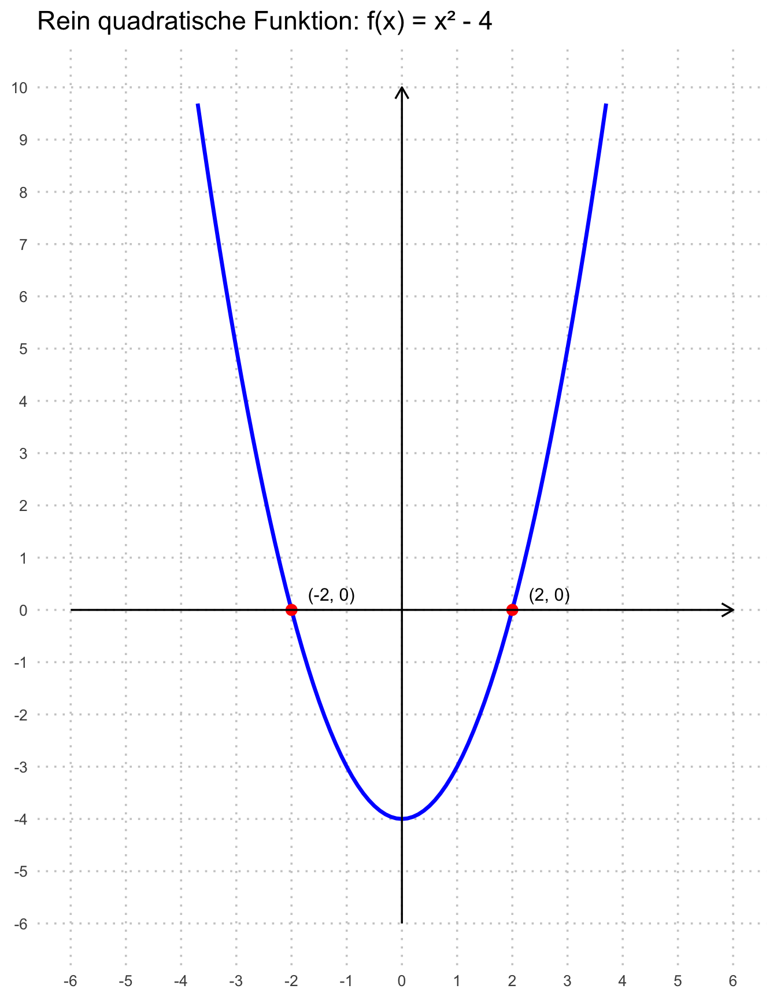
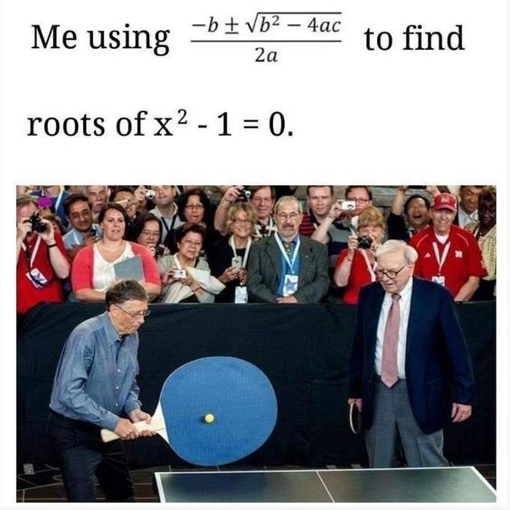
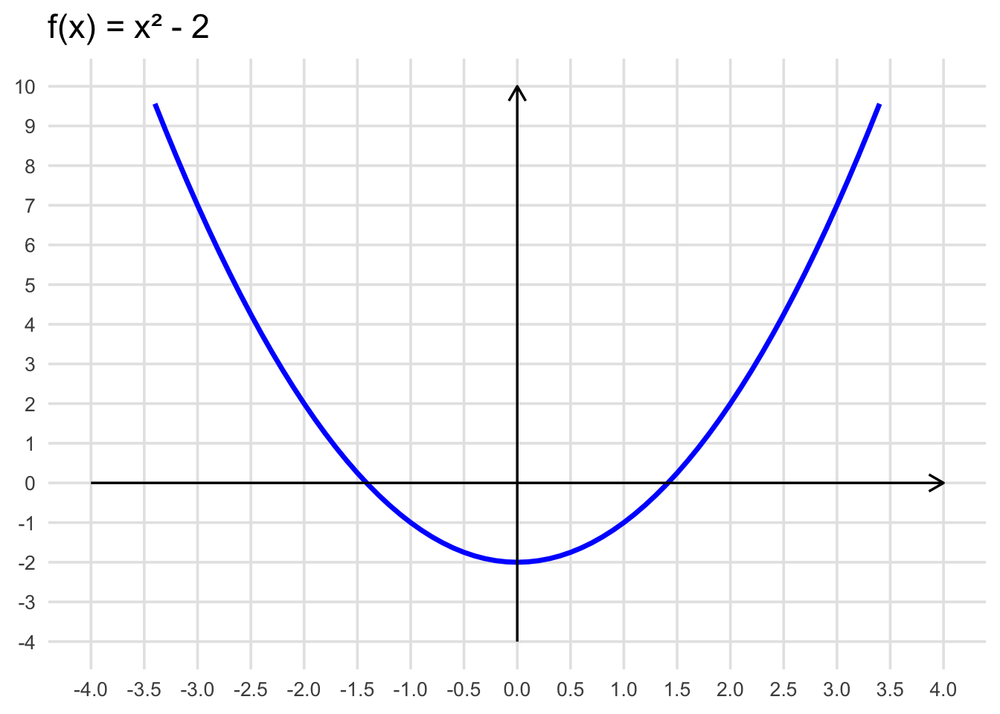
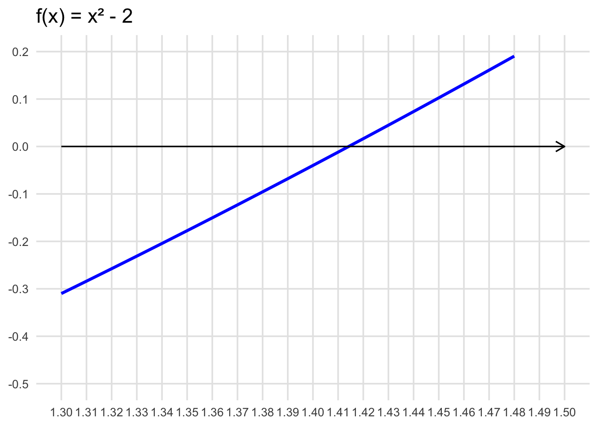

2 Quadratische Gleichungen

2.1 Definitionen
Wir haben bereits gelernt, wie rein quadratische Gleichungen oder quadratische Gleichungen, welche sich faktorisieren lassen gelöst werden. Nun lernen wir weiter kennen, wie man allgemeine quadratische Gleichungen lösen kann und auch, wie man erkennt, ob eine quadratische Gleichung überhaupt eine Lösung besitzt. Zuerst müssen wir quadratische Gleichungen klassifizieren und definieren.
2.1.1 Rein quadratische Gleichung
Die Lösungsmenge einer quadratischen Gleichung müsste ihnen bekannt vorkommen. Wir kennen das als die Nullstellen einer quadratischen Funktion!
Betrachten wir die Nullstellen einer Funktion \(f(x) = ax^2 - d\), können wir das Resultat auch grafisch visualisieren.
2.1.2 Allgemeine quadratische Gleichung
2.1.3 Quadrierte Gleichungen
Quadrierte Gleichungen kennen wir im allgemeinen bereits.
Aufgaben lösen
Lösen sie die Aufgaben zum Thema Gemischte Aufgaben 3.1
2.2 Graphische Lösungen quadratischer Gleichungen
Aus den linearen Gleichungen und auch Gleichungssystemen wissen wir, dass sich Gleichungen oft graphisch lösen lassen. Leider ist diese Methode nicht immer geeignet - in vielen Fällen lässt sich das Ergebnis nie genau genug ablesen.

Die Nullstellen der Funktion \(f(x) = x^2 - 2\) sind in dieser Skalierung offenbar nicht so einfach abzulesen. Versuchen wir, den Ausschnitt mit der Nullstelle etwas zu vergrössern:

Wir sehen, die skalierung kann nicht genau genug sein. Bei \(f(x) = x^2-2\) können wir relativ rasch erkennen, dass für die Nullstelle gilt: \(x=\pm\sqrt{2}\). Und wir wissen, dass \(\sqrt{2}\) nicht rational ist und somit graphisch nicht abgelesen werden kann.
2.2.1 Lösung als Nullstellen der quadratischen Funktion
Die Lösung der quadratischen Gleichung in Normalform \(x^2 + px + q = 0\) sind die Nullstellen der quadratischen Funktion \(f(x) = x^2 + px + q\). Möchten wir die Nullstellen finden, gehen wir wie folgt vor:
Beispiele
Finden Sie die Nullstellen mit der Scheitelpunktform
- \(x^2 - 2x - 3 = 0\)
- \(0.5x^2 + 6x = -11\)
2.2.2 Lösung als Schnittpunkt der Normalparabel mit einer linearen Funktion
Durch Äquivalenzumformung lässt sich die quadratische Gleichung \(x^2 + px + q = 0\) umformen zu \(x^2 = -px - q\).
Nun steht auf der linken Seite die Funktionsgleichung der Normalparabel und auf der rechten Seite die Funktionsgleichung einer linearen Funktion.
Die Lösungen der quadratischen Gleichung sind also diejenigen Stellen, an denen die Normalparabel \(y=x^2\) und die Gerade \(y=-px-q\) dieselben y-Werte annehmen.
Dies sind die \(x\)-Werte der Schnittstellen der beiden Graphen im Koordinatensystem. Wir können wie folgt vorgehen um die Gleichung zu lösen:
Beispiele
Finden Sie die Nullstellen mit der Schnittpunkt-Methode
- \(x^2 - 2x - 3 = 0\)
- \(2x^2 + x = 6\)
Wir sehen, dass die Methoden auch für quadratische Gleichungen in allgemeiner Form funktionieren. Wir können diese entweder zuerst in Normalform bringen, oder mit gestreckten Parablen arbeiten.
2.2.3 Lösungsmenge einer quadratischen Gleichung
Die Lösungen einer quadratischen Gleichung \(ax^2 + b + c = 0\) sind die Nullstellen der zugehörigen quadratischen Funktion \(f(x) = ax^2 + bx + c\).
Eine quadratische Gleichung hat entweder zwei, eine oder gar keine Lösung.
Beispiele
Bestimmen Sie die Lösungsmengen der folgenden quadratischen Gleichungen graphisch.
- \(0.5x^2 - 2.5x + 2 = 0\)
- \(-x^2 + 2x + 2 = 0\)
- \(1+x^2 = 0\)
2.3 Lösungsformeln für quadratische Gleichungen
Wir können quadratische Gleichungen sowohl graphisch, wie auch algebraisch lösen. Ersteres haben wir bereits kennen gelernt. Nun suchen wir uns Lösungsformeln für den algebraischen Weg.
2.3.1 p-q Formel
Betrachten wir erst die quadratische Gleichung in Normalform \(x^2 + px + q = 0\).
Wir suchen eine Formel, um die Gleichung zu lösen. Zur Herleitung benötigen wir einmal mehr die quadratische Ergänzung.
Herleitung pq-Formel
Wir notieren die Normalform einer quadratischen Gleichung: \[ x^2 + px + q = 0 \]
Wir isolieren \(q\) \[ x^2 + px = -q \]
Quadratische ergänzung mit \((\frac{p}{2})^2\) \[ x^2 + px + \left(\frac{p}{2}\right)^2 = -q + \left(\frac{p}{2}\right)^2 \]
Der Term links entspricht nun der Form der ersten binomischen Formel, welchen wir direkt umwandeln können. \[ \left(x + \frac{p}{2}\right)^2 = -q + \left(\frac{p}{2}\right)^2 \]
Wir ziehen die Wurzel \[ x_{1,2} + \frac{p}{2} = \pm\sqrt{-q + \left(\frac{p}{2}\right)^2} \]
Wir isolieren \(x\) \[ x_{1,2} = \pm\sqrt{-q + \left(\frac{p}{2}\right)^2} - \frac{p}{2} \]
Wir stellen um, damit die Formel besser lesbar wird \[ x_{1,2} = -\frac{p}{2} \pm \sqrt{\left(\frac{p}{2}\right)^2 - q} \]
2.3.2 Allgemeine Lösungsformel (Mitternachtsformel)
Auch für die quadratiche Gleichung der allgemeinen Form \(ax^2 +bx+c = 0\) lässt sich eine Lösungsformel herleiten. Wir nutzen zur Herleitung die pq-Formel.
Herleitung pq-Formel
Wir wissen, dass für eine Gleichung der Form \(x^2 + px + q = 0\) gilt \(x_{1,2} = -\frac{p}{2} \pm \sqrt{\left(\frac{p}{2}\right)^2 - q}\).
Wir stellen die allgemeine Form in die Normalform um: \[ ax^2 + bx + c = x^2 + \frac{b}{a}x + \frac{c}{a} = 0 \]
Es gilt somit: \[ \frac{b}{a} = p, \frac{c}{a} = q \]
Wir setzen in die pq-Formel ein: \[ x_{1,2} = -\frac{\frac{b}{a}}{2} \pm \sqrt{\left(\frac{\frac{b}{a}}{2}\right)^2 - \frac{c}{a}} \]
Nun vereinfachen wir: \[ x_{1,2} = -\frac{b}{2a} \pm \sqrt{\frac{b^2}{4a^2} - \frac{c}{a}} \]
\[ x_{1,2} = -\frac{b}{2a} \pm \sqrt{\frac{b^2}{4a^2} - \frac{4ac}{4a^2}} \]
\[ x_{1,2} = -\frac{b}{2a} \pm \frac{\sqrt{b^2-4ac}}{2a} \]
\[ x_{1,2} = \frac{-b \pm \sqrt{b^2-4ac}}{2a} \]
Mit der sogenannten Mitternachtsformel können wir effizient die Nullstellen einer quadratischen Gleichung in der allgemeinen Form berechnen.
Und warum nennen wir die Formel Mitternachtsformel? Nun, kurz gesagt: die Formel ist wichtig. So wichtig, dass wenn man euch um Mitternacht aus dem Schlaf weckt und nach dieser Formel fragt, ihr die auf anhieb aufsagen können solltet.
Lernt diese Formel auswendig! Sie wird euch noch lange begleiten.
Beispiele
Lösen Sie folgenden Gleichungen nach x auf.
- \(5x^2 = 4 + 8x\)
- \(4x^2 + 25 = 15x\)
2.3.2.1 Anzahl Lösungen
Wir wissen bereits, dass eine quadratische Funktion eine, zwei oder gar keine Nullstellen haben kann. So verhält es sich auch bei den quadratischen Gleichungen. Mit Hilfe der Diskriminante können wir die Anzahl Lösungen direkt ablesen.
Der Grund für die Anzahl Lösungen liegt in der Natur der Wurzel. Wie erwähnt entspricht die Diskriminante dem Term unter der Wurzel aus der Mitternachtsformel.
Wir können die Mitternachtsformel umschreiben, dann dürften die Regeln etwas klarer werden: \[ x_{1,2} = \frac{-b \pm \sqrt{D}}{2\cdot a} \]
2.4 Satz von Viëta
François Viète
François Viète (er nannte sich auch Franciscus Viëta in lateinisierter Form) gilt heute als Begründer der Algebra. Er führte die Nutzung von Buchstaben als Variabeln, sowie auch die Symbole \(+\) und \(-\) für die Addition und Subtraktion ein (zuvor wurden plus und minus meist ausgeschrieben).
Für Viète war Mathematik nur ein Hobby. Hauptberuflich war er Jurist und diente als Berater des französischen Königs Heinrich II und später Heinrich IV. Dennoch leistete er bedeutende Beiträge zur Entwicklung der symbolischen Algebra und legte mit seinen Arbeiten die Grundlage für viele späteren Entwicklungen in der Mathematik. Der nach ihm benannte Satz von Viète beschreibt den Zusammenhang zwischen den Koeffizienten einer quadratischen Gleichung und ihren Lösungen.
2.5 Anwendungen quadratische Gleichungen
Natürlich lernen wir den Umgang mit quadratischen Gleichunen nicht nur zum Spass. Immer wieder werden wir auf Fragestellungen treffen, die mit quadratischen Gleichungen gelöst werden können. Sehen wir uns nun einige Beispiele an.
2.5.1 Einführungsbeispiel
Lea und Tim sollen den Rasen (\(9m \cdot 12m\)) mähen (Breite Rasenmäher \(50cm\)). Tim fängt an und mäht von aussen nach innen. Lea ‘Stopp, wir wollten doch fair teilen!’. Tim fragt sich nun, wie viele Runden er mähen darf.
Wie bei den quadratischen Funktionen sollten wir diese Problemstellungen etwas systematisch angehen.
Schritt 1: Verstehen der Aufgabe - Was ist gegeben? - Die Fläche ist \(9m \cdot 12m = 108m^2\) - Die Mähbreite beträgt \(50cm\)
- Was ist gesucht?
- Die Anzahl der Runden.
- Skizzieren sie die Situation für ein besseres Verständnis.
Schritt 2: Zerlegen in Teilprobleme
- Drücke die Breite der von Tim gemähten Randfläche durch eine Variable aus.
- Stelle für den Flächeninhalt der Randfläche eine Gleichung auf.
- Löse die Gleichung.
Schritt 3: Durchführen des Plans
- Einführung der Variabeln. Die Breite des Rands nennen wir \(b\).
- Aufstellung der Gleichung
\[ \text{Randfläche} = \frac{1}{2}\cdot \text{Gesamtfläche} \]
\[ 2\cdot 12b + 2\cdot (9-2b)\cdot b = \frac{1}{2}\cdot 9 \cdot 12 \]
\[ 4b^2 - 42b + 54 = 0 \]
- Lösen der Gleichung
\[ b_{1,2} = \frac{42 \pm \sqrt{42^2 - 4\cdot 4\cdot 54}}{2\cdot 4} = \frac{42\pm 30}{8} \]
\[ b_1 = 9, b_2 = 1.5 \]
Schritt 4: Interpretation und Antwort
- Kann das Ergebnis stimmen?
- \(b=1.5m\) entspricht 3 Bahnen
- \(b=9m\) ist nicht sinnvoll, da \(2b<9\) sein muss
- Antwortsatz: Tim muss drei Bahnen mähen.
2.5.2 Anleitung
Fassen wir allgemein zusammen: